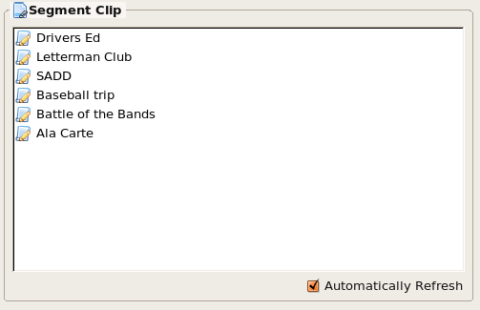

The Segment Clip is a convenient way to
save commonly used segments. Segments can be copied to the Segment Clip
and then used in other scripts by copying them back to new scripts. You
can set the clip to automatically refresh if you are working in a
multiple user environment. You can turn off this feature by clicking
the check box.